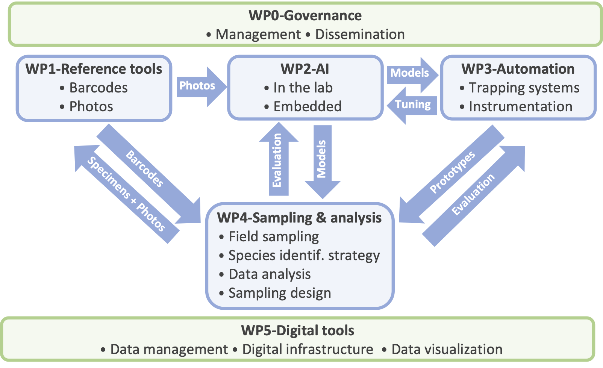

Work packages
Work packages

WP0 - Project management and dissemination of results
Coord.: Carole Kerdelhué (CBGP)
WP1 - Developing reference databases to build a reliable identification toolkit
Coord.: Jean-Claude Streito (CBGP) & Mélodie Ollivier (DYNAFOR)
Objectives: develop shared resources necessary for reliable insect identification. Two databases will be generated: Task 1.1 - a DNA sequence database (barcodes) validated by taxonomists and compatible with the Barcode of Life international database (BOLD); and Task 1.2 - an annotated image database to train artificial intelligence (AI) tools. The consortium has extensive expertise in taxonomic characterization and has been developing databases for over 10 years. Non-destructive extraction and high-quality photographs of specimens will preserve samples while ensuring reliable identification. Links with other WPs: WP1 will provide the necessary resources to WP2 for training and evaluation of AI algorithms, and WP3 & 4 for eDNA and individual-based barcoding identification of field-trapped specimens. Databases will be developed with WP5.
Task 1.1. Database for molecular identification of specimens (barcoding)
We will first assess the current state of existing datasets and available specimens. Then molecular barcoding of non-included species will be generated either by Sanger- or high-throughput MiSeq sequencing, which is well mastered by the different partners. During the course of the project, the consortium will benefit from on-going developments of new technologies in the molecular biology platform of CBGP (ultrafast PCR and MinIon sequencing), which will allow massive production of individual barcodes (automation of processes and sequence analysis). The barcode reference database produced will enable 1- the identification of the Coleoptera specimens collected with conventional traps (WP3 & WP4) and 2- the development of non-lethal monitoring approach based on eDNA for pollinators (WP3 & WP4). This task involves the following steps: 1) Assessment of existing data and identification of gaps, 2) Collection of new specimens from institutional collections or field campaigns, 3) Enrichment of specimen metadata, 4) DNA sequencing processes (CO1 and 16S markers), bioinformatics analyses, and barcode validation, and 5) sequence publication (as a dataset with a doi) on BOLD and Arthemis. For maintenance and traceability, vouchers will be preserved at UMR CBGP collection.
Task 1.2. Development of a photograph reference library
The objective of this task is twofold: 1- produce high-quality photographs using the Keyence VHX5000 of reference specimens in the collections and voucher specimens of barcoded individuals related to task 1.1; and 2- produce between 100 and 1000 photographs of each species for training AI algorithms (WP2). For this second objective, we will gather the photographs available from all partners in the beginning of the project and expert-validated photographs available from open citizen science programs or naturalist social networks (SpiPoll, iNaturalist, INPN Espèces…). The database will be gradually supplemented by acquiring ad hoc lower-quality photographs, firstly using specimens identified by experts already available in the consortium collections and secondly, using specimens collected and identified as part of the project. A semi-automated imaging protocol using Keyence was already successfully tested by EFNO and will be finalized and used. Finally, photographs taken by the prototypes developed in WP3 directly in the field and annotated by expert taxonomists will enrich the database during the course of the project. Ultimately, this database will be made available in a public repository.
WP2 - Workflow development and training AI algorithms for lab- and field-based insect identification
Coord.: Kevin Darras (EFNO) & Blaise Mulliez (LAAS)
Objectives: automate and accelerate insect specimen identification, both in lab conditions and in natura. The ultimate goal is to rely primarily on non-invasive field monitoring techniques, complemented by occasional sample collection for specific taxa. The models will be used for (i) digital binocular microscope imagery that will automate the taxonomic identification for untrained personnel in lab conditions, and (ii) as embedded image analyzer system (WP3) to automatically sort and transmit only pictures containing target groups. This WP builds on the expertise of EFNO, SETE and LAAS with the photographic databases, object detection and image classification models, and embedded vision cameras. Links with other WPs: WP2 will use the resources developed in WP1 and analyze the data obtained in WP3 and WP4.
Task 2.1. Automating insect sorting and identification in the lab
Step 1, we will train object detection models to sort sampled specimens to order- or family-level. Initially, we will evaluate the use of photographs of identified specimens to artificially create images of insects scattered in trays and train the AI model. Step 2, we will develop AI models to reach species-level identification of our focal groups based on image classification models (e.g., ResNET50 or EfficientNet). Again, untrained personnel could thereby perform species-level identifications of insect specimens and put aside low-confidence classifications or false positives for targeted identification by taxonomic experts. Model evaluation will be carried out using new field samples, which can iteratively complement the training dataset until high-accuracy (mAP > 0.8) models are obtained.
Task 2.2. Embedded vision models for non-invasive identification of live insects trapped in the field
We will train object detection models for Raspberry-Pi-based cameras and low-power openMV cameras. Here, the challenge lies in the great variability of the object sizes (from 2 mm to 5 cm). Region-of-interest detection and classification approaches will be compared against object detection (FOMO for openMV, YOLO 11 “nano” for Raspberry cameras) algorithms - optionally generalist ones combined with image classification - in terms of execution speed, power consumption, and workflow accuracy, while open-set AI models could be evaluated too (depending on technological readiness). Target invasive species or major pests might be detected directly and the result transmitted wirelessly. The depth of the embedded image classification will depend on the necessity to transmit results in real-time (i.e., for pest alerts), the power consumption of the transmission, and the data storage constraints. In relation with the capture chambers developed in WP3, limited image resolution will challenge identification depth for the smallest taxa. We will integrate optical magnifying lenses to gather close-up images and evaluate the usefulness of placing mirrors to gather lateral views of insects, which may also facilitate specimen identifications. Combining different imaging scales and angles requires designing tracking workflows to assign different images to the same individual and combine their identification likelihoods.
WP3 - Optimisation of trapping strategies and development of sensor-based instruments
Coord.: Adam Quotb (LAAS) & Emilie Andrieu (DYNAFOR)
Objectives: develop new tools to monitor insect communities in a semi-automated way. We will develop a multi-sensor and multi-trap system enabling standardized, semi-automated monitoring of insect diversity and phenology while keeping a low carbon footprint (Embedded AI, remote data collection). The objective is to enhance multi-taxa insect detection, identification and counting in the field based on the deep learning methods developed in WP2 and a multi-sensor strategy (weather, geolocation, images, and optoelectronics). Links with other WPs: WP3 will use the AI models developed in WP2, and will provide the prototypes of the multi-sensor traps deployed in WP4.
Task 3.1. Selection and optimization of trapping systems and attractants for long term monitoring
The choice of the trapping system depends on flight characteristics of the target species, and the traps’ ability to guide live individuals through the capture chamber located in the smart embedded image analyzer system developed in Task 3.2. Based on preliminary results, we selected black and green Lindgren type traps for coleoptera species, and malaise type traps for pollinators. Both trapping systems will be adapted to forest ecosystem constraints: size and robustness (large mammal presence, understorey), location (on the ground or hanging from branches) and easy to set up by non-expert staff. To increase the target insect captures, two types of attractants (visual and olfactory) will be tested in the field during the first year (effectiveness and ease of use for both types of trap). Once in the trap (fall by gravity for coleoptera and oriented flight for pollinators), insects will have to pass through a capture chamber to escape. This guidance system will be developed and adapted to each trap type to allow passage through the laser (task 3.2) and in front of the optical lens, thereby ensuring the best possible image capture. In the prototype version of the trap, a dedicated system will be added to coleoptera traps to collect the specimens and to assess the quality of automatic AI-based identification by molecular barcoding and taxonomic expertise. The collection system of DNA traces (found in hairs, etc) will be added to the exit chamber for pollinators to differentiate cryptic species through eDNA analyses.
Task 3.2. Smart embedded image analyser system for long term insect monitoring
This smart embedded image analyzer consists of an electronic board enabling image acquisition (such as a Raspberry Pi or openMV) and onboard processing of the captured images by executing AI models developed in WP2. It includes external peripherals for capturing images as well as climatic conditions (temperature, humidity, etc), LEDs for illuminating the field of view, a laser sensor for insect passage detection and camera triggering, a local communication system (Wi-Fi + GSM), and mechanical adaptations for interfacing with traps developed in task 3.1. Raspberry-based devices will be developed starting from the Entomoscope device used in SETE, and openMV-based devices will be designed based on the ecoEye device which continues to be developed at EFNO. Raspberry mini-computers and openMV boards can execute region-of-interest detection natively using frame differencing techniques. Raspberries can execute small-scale object detection models (YOLO nano) and OpenMV devices, which have no operating system, require special libraries to execute AI models based on TensorFlow Lite (openMV libtflm) or MobileNet V2-based FOMO models. In addition, batteries coupled to a solar charging system will provide the necessary power supply to the system in the long run. During the 18 first months of the project, task 3.1 and 3.2 will be carried out in parallel. At the end of this period, 9 prototypes will be delivered to the consortium members for tests in real conditions in URZF, EFNO and DYNAFOR. Once the initial prototypes have been validated, a second prototype version for large scale monitoring (100 - 150 units) will be developed by the LAAS and EFNO and delivered to the consortium to be deployed in the pilot sites (WP4).
WP4 - Design and implementation of sampling strategy and analytical workflow
Coord.: C. Bouget (EFNO) & J.-P. Rossi (CBGP)
Objectives: 1) test the multi-sensor traps and the insect identification tools in forest field conditions, 2) propose a set of statistical tools (made available through R package) for analyzing insect communities sampled with automatic traps, and 3) support decision-making in designing a large-scale national monitoring strategy. Links with other WPs: WP4 will use the tools and resources developed in WP1, WP2 and WP3.
Task 4.1. Definition and implementation of a field sampling plan for pilot sites
First, we will compile an inventory of available datasets (xylophagous and floricolous communities) from the consortium’s laboratories. These datasets will be used to test the performance of different predictive sampling plans before original data are produced in the project. Once the prototypes of automatic traps developed in WP3 are available, we will select 10 pilot sites where intensive sampling will be carried out to quantify the impact of varying sampling effort on biodiversity metrics (4.2) to help design the final, large-scale sampling strategy proposed in 4.3. These 10 sites will reflect the diversity of French forest conditions, including 1- biological reserves from the National Forest Office’s monitoring network (Fontainebleau, Haut Tuileau, Ecouves, Vallon du Maupas, Ste Baume…), 2- living labs promoted by the FORESTT PEPR (Chantilly, Compiègne, Landes, Briançonnais, Pyrénées ariégeoises), 3- Renecofor plots (Fontainebleau) to align with the FP MONITOR design, and 4- long-term monitoring sites managed by project partners (ZA PyGar). 150 automatic traps (50 green multi-funnel traps, 50 black multi-funnel traps and 50 pollinator traps) will be deployed across these 10 sites, with 5 traps of each type per plot. The species lists generated by three methods (visual expert identification, DNA barcoding, AI-based image analysis) will be compared to assess the performance of the prototype automatic photo-trap. The differences between methods will be analyzed at varying taxonomic resolutions (from specific to supra-specific levels).
Task 4.2. Definition and implementation of a pipeline of data analysis: selection of metrics and calculation methods
We will identify key community metrics to be estimated, including species richness, Hill numbers, functional diversity indices based on available functional traits databases, and eDNA-specific diversity metrics ; and specific indicators focusing either on invasive species or emergent forest pests (risk indicators), or on conservation species (conservation indicators). We will develop statistical methods to compute these metrics and assess their confidence intervals and bias using randomization approaches such as bootstrapping. They will be implemented as an R package hosted on GitHub. These tools will be used to analyze the datasets from Task 4.1 and simulate the impact of decreasing the sampling effort per site upon the metrics and their uncertainty (rarefaction). The R package will integrate with the Shiny application developed in WP5. We will also evaluate the impact of potential limitations in taxonomic-level resolution obtained from AI algorithms.
Task 4.3. Designing the large scale monitoring strategy
The automatic sensor should be deployable across a national network of several dozen sites, requiring minimal and infrequent human intervention. Using results obtained in Task 4.2, we will define scenarii based on progressively increasing sampling efforts per site to assess biodiversity metrics, detect rare or key species, and monitor invasive or emerging pests. We will propose two large-scale sampling strategies related to contrasted monitoring objectives: (i) a systematic network of large-scale forest plots (e.g., Renecofor), already multi-instrumented through the FP MONITOR passive acoustic monitoring program, and (ii) a network of sites along ecological gradients, such as harvested versus reserve plots, to evaluate the impact of land-sparing strategies on biodiversity conservation.
WP5 - Data management and visualization
Coord.: Mathieu Laparie (URZF) & Wilfried Heintz (DYNAFOR); FP NUM-DATA members as external advisors.
Objectives: develop a reproducible software strategy deployed on an institutional server, ensuring its portability to other infrastructures. Automated data acquisition systems and AI-based species recognition generate large volumes of data, requiring a robust software architecture for database management designed to (i) ensure long-term maintenance and administration and (ii) allow scalability as the device network expands and data volumes increase. Links with other WPs: WP5 is transversal and thus related to all other WPs. The architecture will be optimized to efficiently manage and secure the data produced by MASSIF smart devices (5.1) while guaranteeing the system’s long-term sustainability (5.3). A web service for authenticated project members will be implemented, enabling secure querying and retrieval of data. Furthermore, a public R Shiny application will be developed to provide a user-friendly interface to the functionalities of the R package developed in WP4 (5.2). The container will first be set up on isolated test machines in collaboration with an experienced system administrator to make informed decisions about critical aspects such as database interoperability, security configurations, or containerization solutions for scalability and reproducibility. Ongoing consultations will take place with external experts, including a DevOps/Software Engineer and three NUM-DATA information systems specialists.
Task 5.1. Setup and tuning of an institutional infrastructure to store, secure and query databases
A virtual machine will be deployed on a public research institution server to centralize and host data from prototype sensors and AI models. Field (WP4) and reference (WP1) data will be stored in optimized database formats (e.g., PostgreSQL/PostGIS for spatial data, SQLite for lightweight needs) to ensure interoperability and query efficiency. To promote open science and replicability, we will prioritize Free and Open Source Software (FOSS), use Git versioning, and provide public documentation with default configurations and scripts. Containerization (e.g., Docker or Kubernetes) will decouple the development environment from hardware, facilitating seamless migration, redundancy, and cost-effective long-term administration across research groups.
Task 5.2. Development of a public web tool to explore data and use WP4 R package
We will implement a web authentication system to enable project members to access and annotate the hosted data, and develop a public R Shiny application to allow users to dynamically interact with biodiversity data. Users will upload monitoring datasets and compute biodiversity metrics and associated statistics using the R package from WP4. Initially hosted on the project’s virtual machine for testing, the tool will ultimately be deployed on an institutional server managed by dedicated INRAE teams to ensure long-term reliability and maintenance beyond the project’s duration.
Task 5.3. Creation of free and open-source configurations and documentation for replication and migration to trans-institutional infrastructures
Comprehensive configurations and documentation will be developed throughout the project to enable replication and migration to various infrastructures or self-hosted solutions. This will include 1- reproducible configurations (using Docker or Kubernetes-based containerization), 2- open-source, version-controlled documentation for standardizing redundant or self-hosted server setups, 3- guidelines for scaling data flows and migrating to larger, supra-institutional data centers, reducing dependency on specific partners. Continuous support from NUM-DATA experts will ensure that technical decisions remain compatible with databases from other national or international biodiversity monitoring initiatives.
Last update: September 12 2025